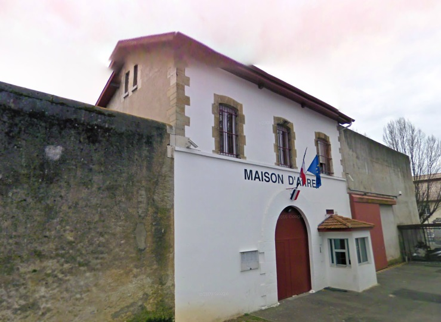
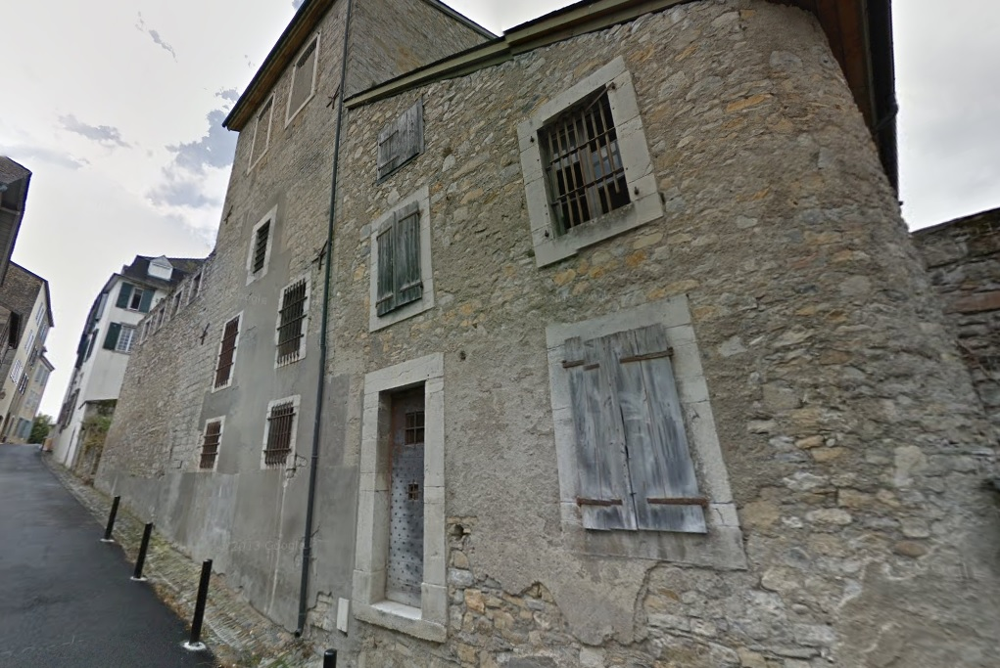
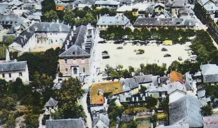
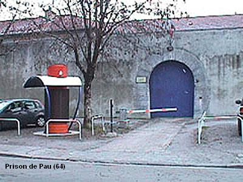
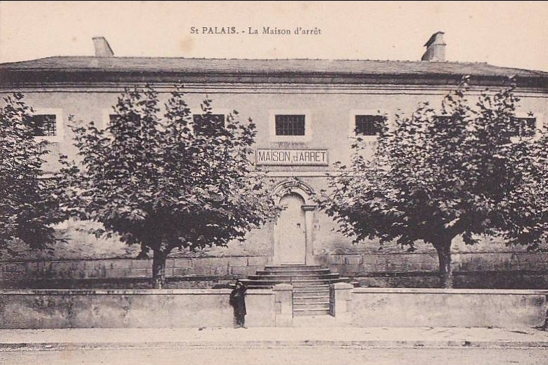

| Département | Images | Ville | Nom | Adresse | Période | Capacité | Histoire du lieu | Nombre d'exécutions |
| Pyrénées-Atlantiques (64) |  |
Bayonne | Prison Saint-Esprit, dite "Villa Chagrin" | 44, rue Charles-Floquet | En service depuis 1891 | 64 places (1962) 75 places (2015) |
Sur un terrain de 4000 m², la construction de la nouvelle prison de Bayonne, entamée aux premières années de la IIIe République, fut interrompue en 1875 et reprise en 1879. Outre les graves inondations de 1879, son édification fut ralentie par la décision d'en faire une prison cellulaire, alors qu'elle était conçue à la base comme un établissement avec des dortoirs communs. Ce n'est que le 16 décembre 1891 qu'elle est officiellement "ouverte". Elle connut son moment de « gloire » en hébergeant dans les années 1930 bien des notables locaux complices de l’escroc Stavisky. Fin 2016, la municipalité fait savoir ses intentions, à terme, de récupérer le terrain quand la prison sera désaffectée, ce qui devrait arriver dans quelques années. | Aucune exécution. |
| Pyrénées-Atlantiques (64) |  |
Oloron-Sainte-Marie | Maison d'arrêt, dite "Chalet Sainte-Croix" | 18, rue Cujas | 1644-1926 | Ancienne maison de maître sous le Moyen-Âge, ayant notamment accueilli le roi Louis XI en 1462, alors qu'il se rend en pèlerinage à Notre-Dame-de-Sarrance, l'endroit - du moins, le rez-de-chaussée - est transformé en prison suite à l'incendie du château vicomtal. Pendant plus de cent cinquante ans, les murs accueilleront prisonniers au rez-de-chaussée, archives municipales au premier étage, et hôtel de ville au second étage. Le bâtiment, désaffecté en 1926, est classé aux Monuments Historiques en 1987, et restauré au début du XXIe siècle à cause de son grave état de délabrement. | Aucune exécution | |
| Pyrénées-Atlantiques (64) |  |
Orthez | Maison d'arrêt | Rue des Jacobins | -1926 | Jouxtant la mairie. En 1894, le gardien y est assassiné par trois détenus, et sa femme ne survit que de justesse à l'attaque. Deux d'entre eux seront guillotinés quelques mois plus tard à Mont-de-Marsan. | Aucune exécution | |
| Pyrénées-Atlantiques (64) |  |
Pau | Maison d'arrêt, de justice et de correction | 14 bis, rue Viard | En service depuis 1861 | 199 places, 33 surveillants (1962) 256 places (2015) |
Quatre ans après avoir ouvert son nouveau palais de justice sur l'ancien couvent des Cordeliers, Pau se décide à faire construire de nouvelles prisons. En périphérie de la ville, sur un terrain de 10.000 m², les travaux durent un an, au bout duquel la prison est enfin inaugurée. D'une forme assez singulière par rapport aux autres prisons de l'époque (un bâtiment en forme de Pi renversé et un autre en crochet fermé de typographie), l'endroit fait la fierté de la ville par sa modernité. Elle accueillera très rarement des condamnés à mort, la Veuve ne se dressant à sa porte qu'une seule fois en 1894. Toujours en activité plus de cent cinquante ans après, la prison, cernée au fil du temps par la ville, est désormais considérée comme sale, insalubre et surpeuplée, et le projet d'implanter en campagne une prison neuve à la capacité doublée - au moins 500 places - semble de plus en plus assuré d'être mis en œuvre d'ici une dizaine d'années. | Une exécution en 1894. |
| Pyrénées-Atlantiques (64) |  |
Saint-Palais | Maison d'arrêt | -1926 | A l'emplacement de l'actuel marché couvert. | Aucune exécution |
{kind=link}
{kind=link}
{kind=link}
{kind=link}
{kind=link}